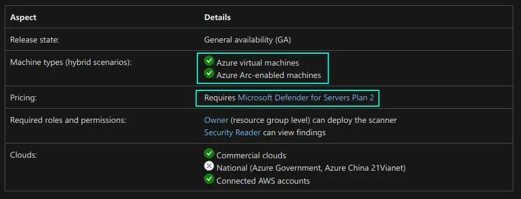
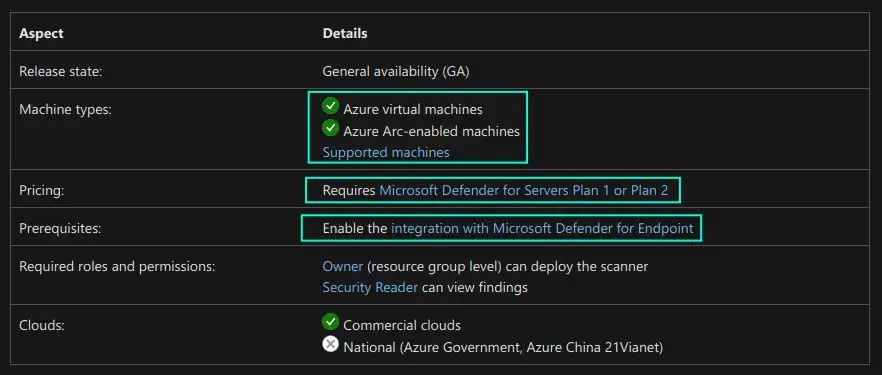
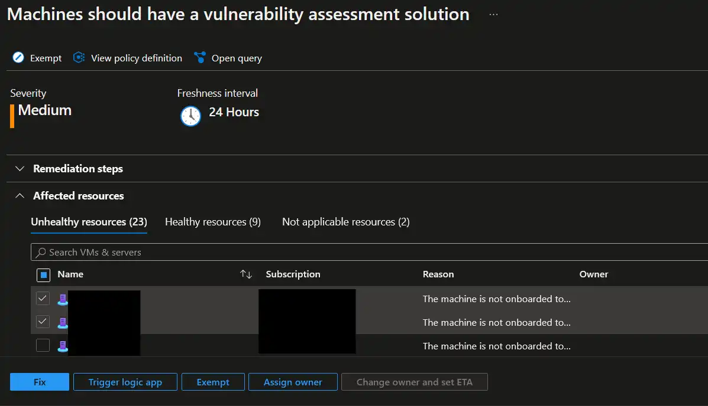
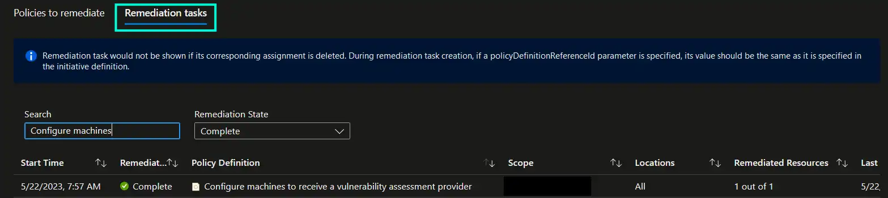
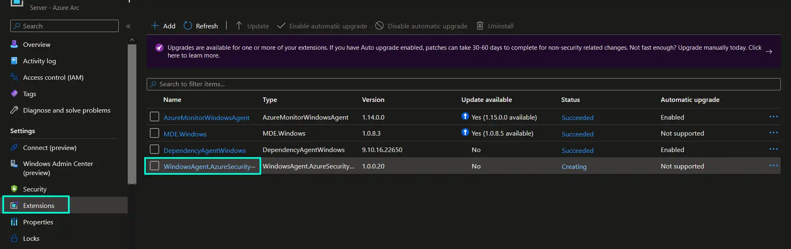
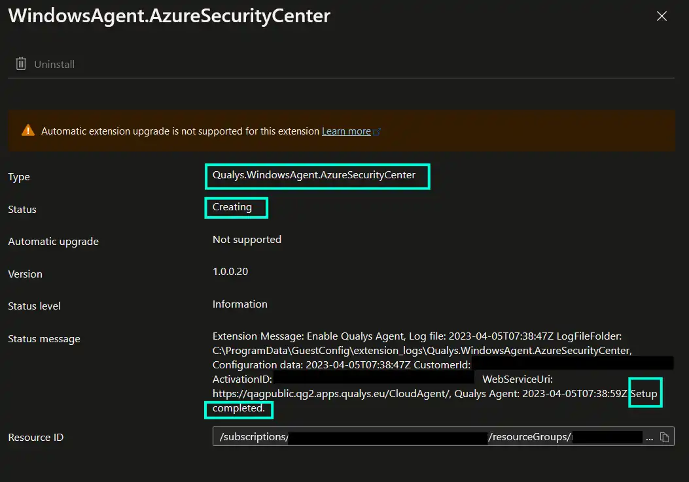
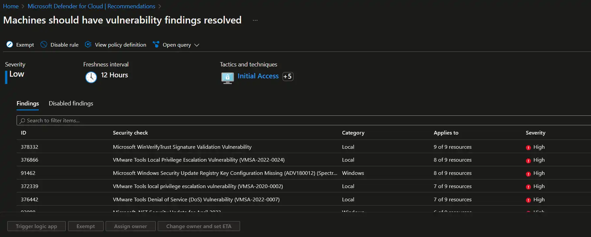
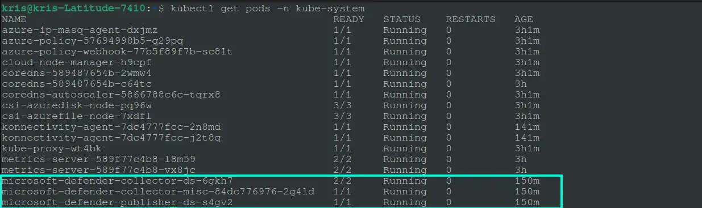
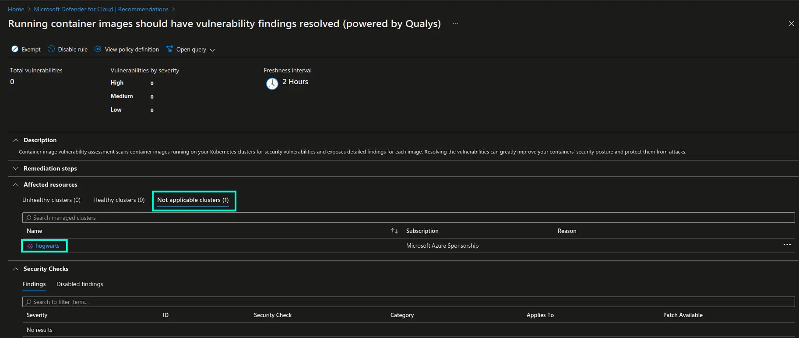

Scanning Azure VMs, Azure Arc-Enabled Servers and ACR Images for Vulnerabilities With Microsoft Defender and Qualys
In the modern reality with tens of security vulnerabilities that are being disclosed daily you need to continuously implement a variety of security controls in order to ensure that your systems are strongly protected. Even if you’re running on the cloud⛅
One of the security controls that I would like to talk about in this blog post is vulnerability scanning. Vulnerability scanning is an essential practice for maintaining a secure infrastructure, mitigating risks, and protecting sensitive data from potential threats. It allows organizations to stay proactive, comply with regulations, and safeguard their systems against known vulnerabilities and emerging security risks.
One of the possibilities that you have in Microsoft Azure is utilizing Qualys vulnerability scanner, which is available as an integrated offering as part of Microsoft Defender for Cloud.
Now let’s take a look at what Qualys is, how it can be applied to perform vulnerability scanning of Azure virtual machines, hybrid machines (aka Azure Arc-enabled servers), Azure Container Registry…and finally how Qualys is involved in securing AKS clusters😺
What is Defender for Cloud’s integrated Qualys?
Qualys isn’t only the name of the vulnerability scanner but it’s also a company that offers a bunch of different services and tools in the area of information security and compliance. You can read more about them here: Qualys.
In terms of Microsoft Azure and Defender for Cloud we will be looking at Qualys vulnerability scanner service. It focuses on identifying security vulnerabilities in IT infrastructure so that consumers can get comprehensive insights into the security weaknesses that are present in their systems. It’s goal is to help consumers proactively identify vulnerabilities, prioritize remediation efforts, and improve overall security resilience.
Being offered as an integrated vulnerability scanner, as part of Microsoft Defender for Cloud offering, it doesn’t require a separate Qualys license or account - it’s taken care of by Microsoft and doesn’t introduce additional cost, as long as you’re using a compliant MS Defender plan. Using integrated offering instead of BYOL is also beneficial in case you discover any problems or challenges with the vulnerability scanner - since it’s an integrated offering you can get prompter assistance from Microsoft who can also involve Qualys team directly for faster issue resolution.
If you’re using Microsoft Defender for Endpoint… and want to enable Defender for Cloud’s integrated Qualys on your servers, please note that you also have another option worth considering. Once you have Microsoft Defender for Endpoint enabled you can utilize Microsoft Defender Vulnerability Management, which is quite similar to the functionality provided by Qualys, but it’s agentless, i.e. it doesn’t require you to install any additional agents on the servers in order to perform vulnerability scanning. Azure Arc-enabled servers are also supported by Microsoft Defender for Endpoint and Microsoft Defender Vulnerability Management. You can find a few initial similarities and differences in the screenshots below, but do check out additional material in the last section of this blog post for more information on the topic🤗
Defender for Cloud’s integrated Qualys:

Microsoft Defender Vulnerability Management:

Now let’s take a look at how you can utilize vulnerability scanning with Defender’s integrated Qualys scanner for different resources in Azure😼
Implement scanning of Azure VMs and Azure Arc-enabled servers
There are multiple ways you can enable Defender for Cloud’s integrated Qualys vulnerability scanner on Azure VMs and Azure Arc-enabled servers.
One way is to manually choose non-compliant machines and deploy Qualys through remediation step of the Machines should have a vulnerability assessment solution recommendation in Defender for Cloud page in Azure portal.
Please note that Defender for Cloud’s integrated Qualys requires Microsoft Defender for Servers Plan 2.

In this case you will still need to perform manual steps, by checking back and forth for non-compliant servers and explicitly choosing which servers to deploy Qualys to. I prefer more automation and less manual steps, therefore I would like to show you how to do the same but at scale, with help of Azure Policy😼
There’s a built-in Azure policy definition available for us, that’s called Configure machines to receive a vulnerability assessment provider - it will deploy Defender for Cloud’s integrated Qualys vulnerability scanner to all non-compliant Azure VMs and Azure Arc-enabled servers.
Please note that this policy definition can also be used to deploy Microsoft Defender Vulnerability Management, but you need to ensure that you configure
Vulnerability assessment provider typeparameter to bemdeTvmduring policy assignment.
I will now show how this policy can be enabled, including initial remediation task with help of Terraform. We will create a user-assigned identity with Security Admin role assignment, which has the required permissions to perform policy remediation. We will also create a policy assignment on subscription level to ensure that all resources, existing and future ones, in the respective subscription will be evaluated by the policy. Finally, we will create a subscription policy remediation task to trigger initial deployment of Qualys to detected non-compliant resources.
Please note that continuous auto-remediation of non-compliant resources is not supported in Azure Policy, and this is by design. You can potentially automate that by for example, implementing a Logic App or an Azure Function that could react to the policy’s state changes. You can read more about it in this GitHub issue: Automatic remediation
resource "azurerm_user_assigned_identity" "azp_uai" {
resource_group_name = "rg-azpolicy-dev"
location = "northeurope"
name = "uai-pa-dev"
}
resource "azurerm_role_assignment" "azp_uai_ra" {
scope = "/subscriptions/${var.subscription_id}" # Your Azure subscription ID. Injected as variable here for illustration purposes
role_definition_id = "/providers/microsoft.authorization/roleDefinitions/fb1c8493-542b-48eb-b624-b4c8fea62acd" # Security Admin
principal_id = azurerm_user_assigned_identity.azp_uai.principal_id
}
resource "azurerm_subscription_policy_assignment" "pa_qualys" {
name = "pa-qualys"
location = "northeurope"
policy_definition_id = "/providers/Microsoft.Authorization/policyDefinitions/13ce0167-8ca6-4048-8e6b-f996402e3c1b"
subscription_id = "/subscriptions/${var.subscription_id}" # Your Azure subscription ID. Injected as variable here for illustration purposes
description = "Azure Defender includes vulnerability scanning for your machines at no extra cost. You don't need a Qualys license or even a Qualys account - everything's handled seamlessly inside Security Center. When you enable this policy, Azure Defender automatically deploys the Qualys vulnerability assessment provider to all supported machines that don't already have it installed."
display_name = "Configure machines to receive a vulnerability assessment provider"
enforce = true
identity {
type = "UserAssigned"
identity_ids = [azurerm_user_assigned_identity.azp_uai.id]
}
parameters = <<PARAMETERS
{
"effect": {
"value": "DeployIfNotExists"
}
}
PARAMETERS
}
resource "azurerm_subscription_policy_remediation" "prt_qualys" {
name = "prt-qualys"
subscription_id = "/subscriptions/${var.subscription_id}" # Your Azure subscription ID. Injected as variable here for illustration purposes
policy_assignment_id = azurerm_subscription_policy_assignment.pa_qualys.id
location_filters = ["northeurope"]
resource_discovery_mode = "ReEvaluateCompliance"
}
Once the policy assignment is deployed, initial remediation task will kick in -> detect non-compliant machines and deploy Qualys extension to them. As an example in the screenshot below, you should be able to see Qualys extension being deployed as an extension to an Azure Arc-enabled resource.


Once extension is deployed scanning will begin automatically and will from that point on run periodically, every 12 hours.
Please note that for Azure Arc-enabled servers Qualys extension can sometimes end up hanging in “Creating” state so you need to check the extension logs as the one in the screenshot below, to confirm if extension was installed successfully. You can also attempt to resolve this by re-installing the extension.

After some time you should be able to see detected vulnerabilities and affected resources in Machines should have vulnerability findings resolved recommendation in Defender for Cloud, from where you can act further upon the respective findings and mitigate them. Findings will be categorized based on severity and will also include information about related CVEs and CVSS scores in addition to recommended remediation instructions.

What about Azure Container Registry (ACR) and AKS?
When it comes to ACR and AKS things work a bit differently. I will share some of the most significant highlights here, but I would like to recommend to check out additional Microsoft documentation, that I shared in the section below, for more details on how this works, because those articles explain it really well.
For vulnerability scanning to be enabled in ACR you need to enable either Defender Cloud Security Posture Management (CSPM) with vulnerability assessment extension or Defender for Containers. Once it’s done, Qualys will be used to perform scanning of container images that are imported, pushed, pulled to ACR or even are running in the connected AKS clusters. Results for detected vulnerabilities will be available in Defender for Cloud, in the same way as they are for servers.
Qualys vulnerability scanner is hosted by Microsoft, therefore customer data is NOT shared with the Qualys company.
Please note that only images that are stored in Azure Container Registry will be evaluated. If you’re using images that are stored elsewhere (f.ex., in Docker Hub or Microsoft Container Registry) you will need to import them to ACR to utilize the vulnerability scanning feature.
Now, what about AKS?
You may think: AKS uses Azure VMs or VMSS to power its Nodes so would vulnerability assessment in this case work in the same way as for regular Azure VMs and Azure Arc-enabled servers, like we discussed above? - Well, not quite🤔
Approach to vulnerability scanning in AKS is layered, just like it is in many other areas of AKS ecosystem😅
-
AKS specific container images and packages, i.e. system-side artifacts that are mainly related to AKS control plane and standard components that are being provided by AKS. This areas is owned, maintained and continuously secured by Microsoft with a wide collection of security tools and practices, some of which are described in more detail in the vulnerability management article linked in the section below.
-
System and Worker Nodes. Microsoft continusouly rolls out security patches to AKS Nodes but you need to familiarize yourself with AKS upgrade and update processes in order to understand what you need to do in order to ensure that those updates are properly applied. The golden principle here is to establish a routine where you can continuously upgrade AKS cluster and Node image versions in addition to roll out of daily or weekly Node OS updates, depending on which OS your Nodes are running on. I have earlier written a deep dive blog post on the topic of AKS upgrade strategies which you’re welcome to check out: Exploring Upgrade Strategies in Azure Kubernetes Service
Where Qualys comes in when it comes to AKS is container images. If you’re using AKS in combination with Azure Container Registry, that’s where Qualys can be used in order to scan for vulnerabilities in the containers that are running in your AKS clusters. This is done with help of Microsoft Defender agent that is running on the cluster - it collects data about the currently running images and sends it further to Microsoft Defender that correlates this data with vulnerability scanning output for images that are stored in ACR.

Findings will also be available in Defender for Cloud page.
Please note that this functionality only applies to images pulled from ACR. If your AKS clusters don’t have workloads using ACR images, these clusters will appear in the “Not applicable clusters” section of
Running container images should have vulnerability findings resolved (powered by Qualys)recommendation in Defender for Cloud, as shown in the screenshot below.

Additional resources
Below you may find a few additional resources to learn more about Microsoft Defender’s integrated Qualys vulnerability scanner and vulnerability management in AKS:
-
Defender for Cloud’s integrated Qualys vulnerability scanner for Azure and hybrid machines
-
Scan your Azure Container Registry images for vulnerabilities
-
Investigate weaknesses with Microsoft Defender Vulnerability Management
That’s it from me this time, thanks for checking in!💖
If this article was helpful, I’d love to hear about it! You can reach out to me on LinkedIn, Twitter, GitHub or by using the contact form on this page.😺
Stay secure, stay safe.
Till we connect again!😻